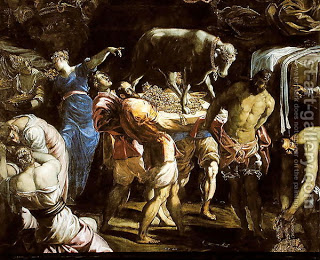

Sanhedrin 63 - Joining God with Other Powers
When the Jews worshiped the Golden Calf, they said, "... These are your gods, O Israel, who brought you up from the Land of Egypt ." The word "brought" is in plural, as indicated by an extra letter vav. This means that the Jews continued to recognize the divinity of God, but paired Him with another entity. Had they said "brought" in singular, those who do evil to Israel (euphemism for the Jews themselves) would have been subject to extermination - this is the opinion of Rabbi Meir.
However, Rabbi Shimon says that whoever pairs the name of the One in Heaven with something else in worship is torn from the world, for it is stated "... only to God alone " Rather, those who worshiped the Golden Calf accepted upon themselves many deities in addition to the Calf. They recognized God's omnipotence, but they contended that He had relegated jurisdiction over the world to many hosts.
Art: Jacopo Tintoretto - Adoration of the Golden Calf